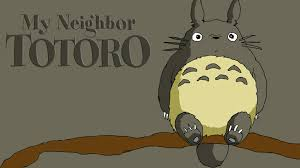
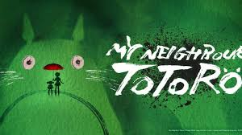

¿Quién es Totoro?
Totoro es un personaje ficticio y el protagonista de la película "Mi vecino Totoro" (*Tonari no Totoro*, 1988), dirigida por Hayao Miyazaki y producida por Studio Ghibli.


Características de Totoro
- Es un espíritu del bosque.
- Tiene una apariencia amigable.
- Se comunica mediante sonidos guturales.
- Parece una mezcla entre un oso, un mapache y un búho.
Otros personajes de la película
- Mei Kusakabe
- Satsuki Kusakabe
- Gatobús
- Chu-Totoro y Chibi-Totoro
Información de Totoro
| Característica | Descripción |
|---|---|
| Color | Gris con vientre blanco |
| Habilidad | Poder volar y hacer crecer árboles |
| Personalidad | Amable y protector |
Intro de la película
Enlaces de interés
Para más información sobre Totoro y Studio Ghibli, visita estos enlaces: